How does CAT make money, and what is changing?
BUS209 · Fall 2026
FactSet Fundamentals
Move from a company question to evidence, context, and a professional conclusion.
BUS209 · Fall 2026
Move from a company question to evidence, context, and a professional conclusion.
Case question
How does CAT make money, and what is changing?
What do profitability, growth, leverage, and valuation suggest?
How does CAT compare with peers and its industry?
What do management, markets, and the economy tell us to watch?
The path through FactSet
Search, help, and shortcuts
Profile, key statistics, and financials
Comparable companies and valuation
News, filings, and transcripts
Performance, players, and drivers
Events and economic context
Excel output and explanation
Find your way quickly
Search for CAT-US in the FactSet search bar.
Use CG to open Company Guide.
Use the left-side Reports menu to move from overview to deeper research.
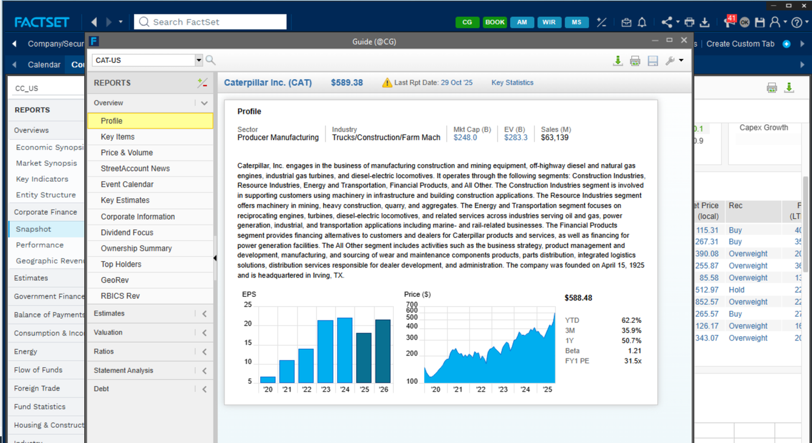
Interface example captured in 2025. Market values shown are historical.
Company, security, person, or function
Use the question-mark menu in FactSet
Use the FactSet e-learning resources linked in Canvas
Company Guide
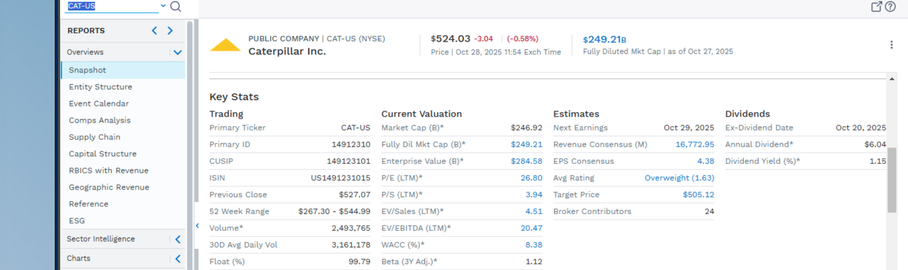
Profile and business description
Returns and price history
Market value, beta, and WACC
Growth, margins, and leverage
Leadership and key decision-makers
Recent events that may change the view
Interface example captured in 2025. Market values shown are historical.
Move from locating to interpreting
Find CAT’s profitability and liquidity measures in Snapshot.
Open the blue WACC value to see the calculation components.
Connect the metric to an investment hurdle, trend, or risk—not just a definition.
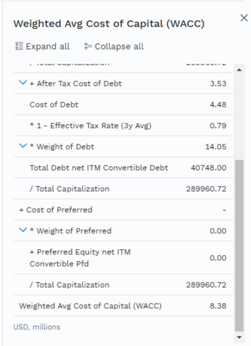
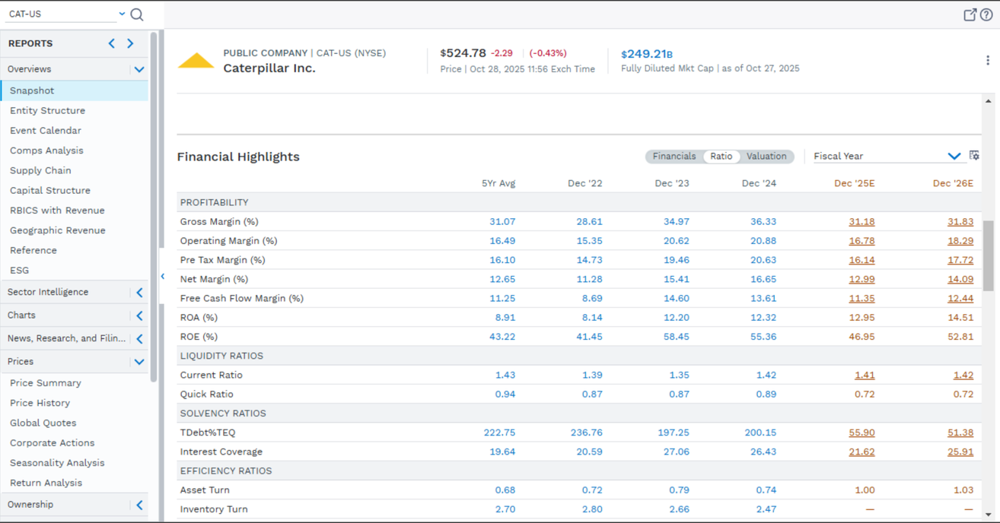
Interface example captured in 2025. Values shown are historical.
Live You Try It
Where did you locate the metric?
What does the current value or trend show?
What comparison would make the number more useful?
Why could this evidence change a recommendation?
Comp Analysis
Start with named competitors or FactSet’s industry classifications.
Apply region, size, and business-model criteria deliberately.
Compare valuation and operating measures—but challenge the median.
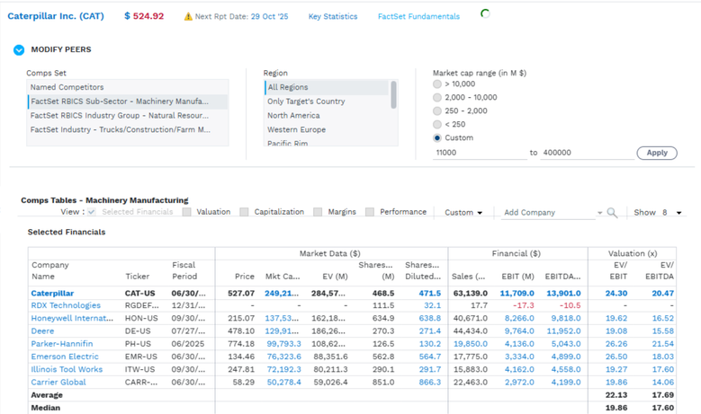
Interface example captured in 2025. Company values shown are historical.
Live You Try It
What selection criterion did you change?
How did the group median change?
Did the new group become more comparable?
Which peer set would you use in a presentation—and why?
News, research, filings & transcripts
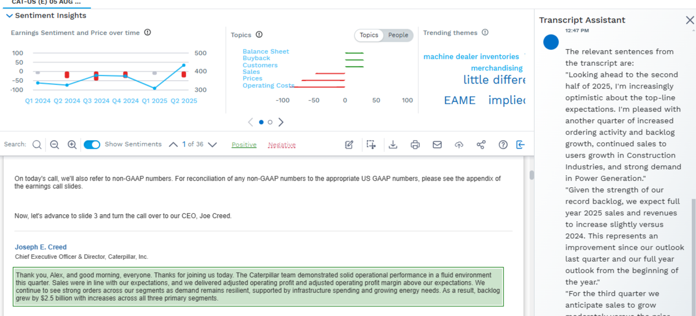
Interface example captured in 2025. The earnings-call content is historical.
Use themes or sentiment to identify a potentially important topic.
Read the relevant transcript passage in context.
Look for financial or operating evidence that supports the statement.
Distinguish management’s claim from your analytical conclusion.
Industry Overview
Compare industry return with the broader market.
Review valuation, profitability, leverage, and growth characteristics.
Identify the key companies shaping the industry result.
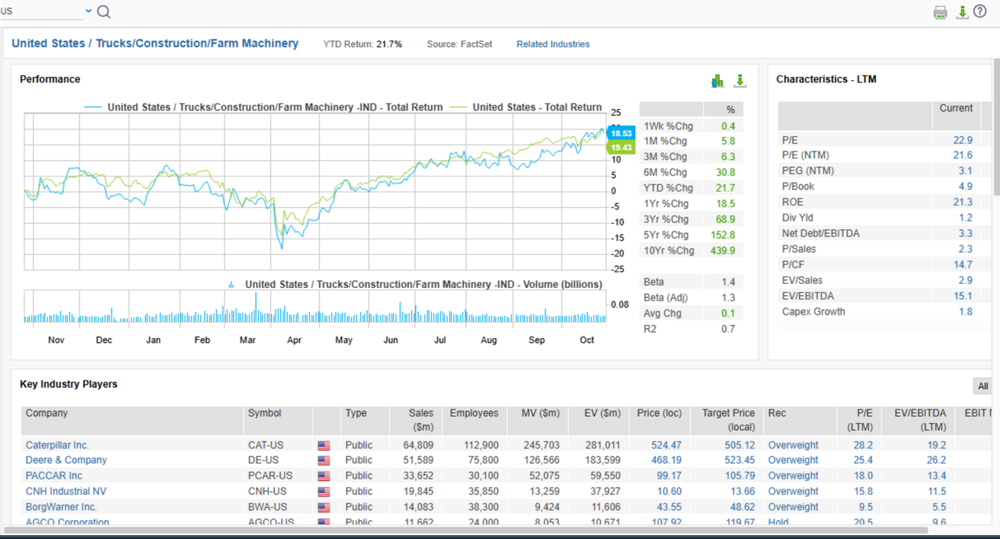
Interface example captured in 2025. Returns and company values shown are historical.
Two ways to add industry context
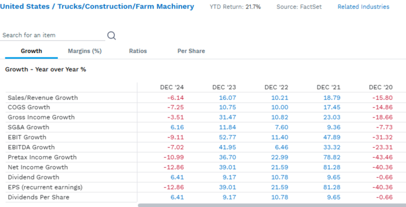
Compare growth, margins, ratios, and per-share measures across time.
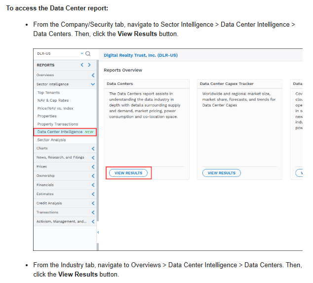
Use focused reports when a specific business driver requires deeper industry context.
Interface examples captured in 2025. Values and available reports may change.
Economic context
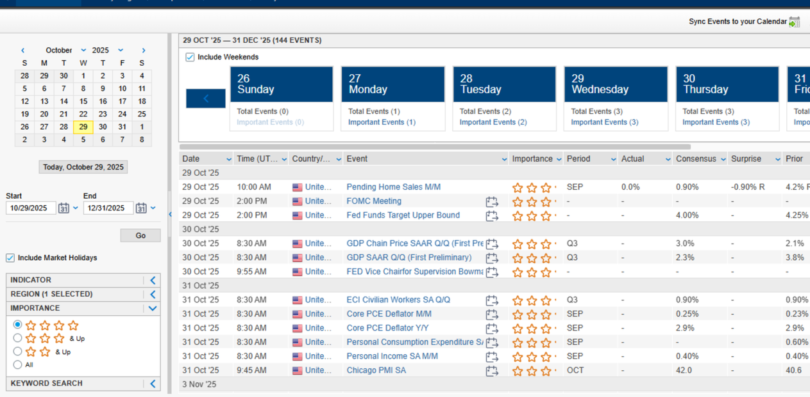
Identify the next high-impact event and the market expectation before it is released.
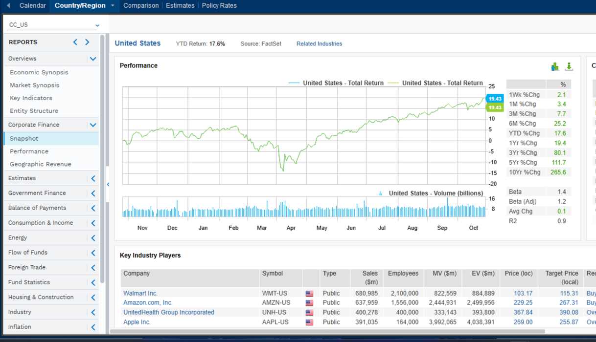
Connect company research to monetary, fiscal, industrial, and country-level conditions.
Interface examples captured in 2025. Calendar events and values shown are historical.
Office Integration
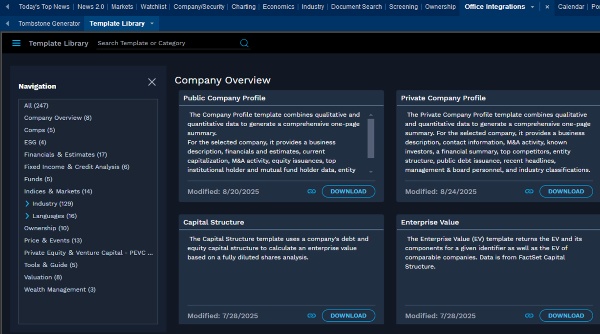
Start with a structure that fits the research question.
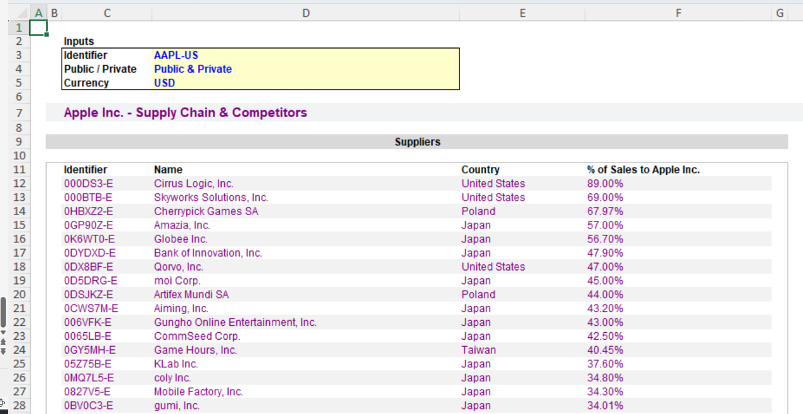
Inputs and FactSet formulas create a repeatable analytical deliverable.
Interface and template examples captured in 2025.
Bring the workflow together
One operating or financial strength
One comparison that changes the view
One management claim and its supporting evidence
One industry or macro factor that matters
State the recommendation, the strongest evidence, and the biggest remaining uncertainty.
What success looks like
A financial question worth investigating
The FactSet evidence that helps answer it
A conclusion that explains what the evidence means
Use the left and right arrow keys to move between slides. Press F for fullscreen.